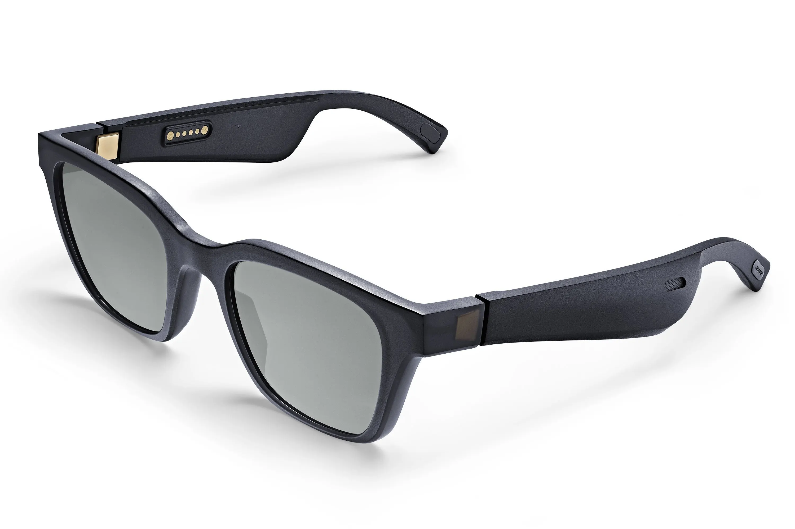

Lunettes connectées
Bose propose les toutes premières lunettes connectées à votre téléphone. Il devient possible d'écouter de la musique tout en entendant ce qui ce passe autour de soi. Il s'agit d'un produit unique avec différents modèles pour s'adapter à tous les goûts.
Fonctionalités
- Trois heures d'autonomie. Pour trois heures de musique.
- Répondre à ses appels sans sortir son téléphone.
- Augmenter ou baisser le volume rien qu'en tournant la tête.

Une application pour effectuer ses propres réglages
Bose Connect App
Profitez de conseils et personnalisez vos paramètres pour passer plus de temps à écouter votre musique et moins à configurer votre produit en téléchargeant les mises à jour logicielles pour débloquer de nouvelles fonctionnalités.
Informations complémentaires
Le produit
Avec leurs enceintes brevetées intégrées dans les branches et leurs verres haut de gamme, les lunettes Bose Frames sont conçues pour protéger du soleil tout en offrant un son de qualité. Découvrez les caractéristiques du produit pour en comprendre le fonctionnement.